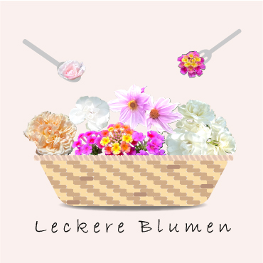

Profile
About the designer
Kazuki
Yamanaka
Design Student / Japan
デザインやイラストへの興味からグラフィックデザインを学び始め、
現在はロゴやポスターを中心に制作しています。
情報を整理し、見る人に伝わりやすく届けることを意識したデザインを心掛けています。
これからも多くの経験を積み、自分らしい表現を磨いていきたいと思っています。
Works
Selected
Works
A selection of works.